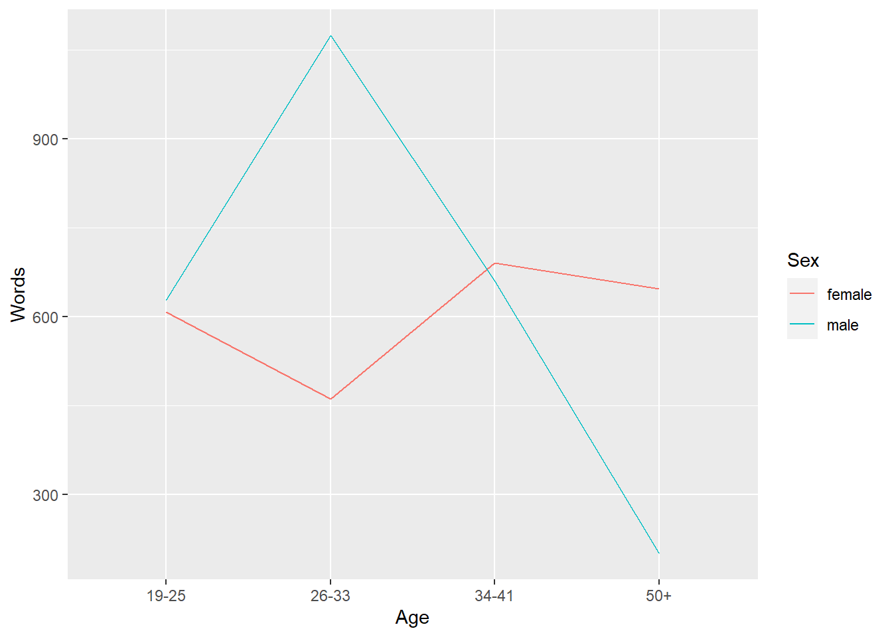
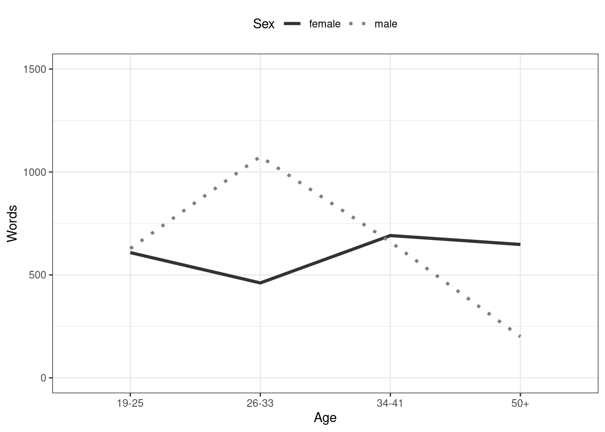
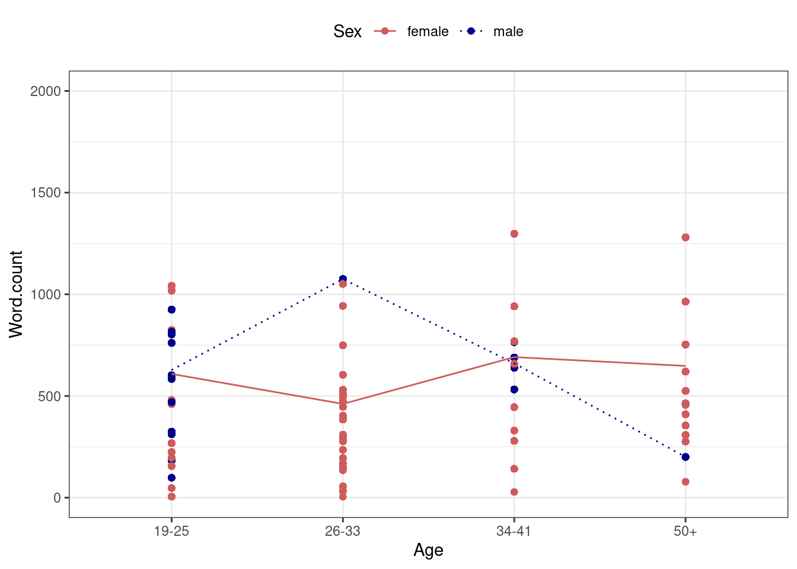
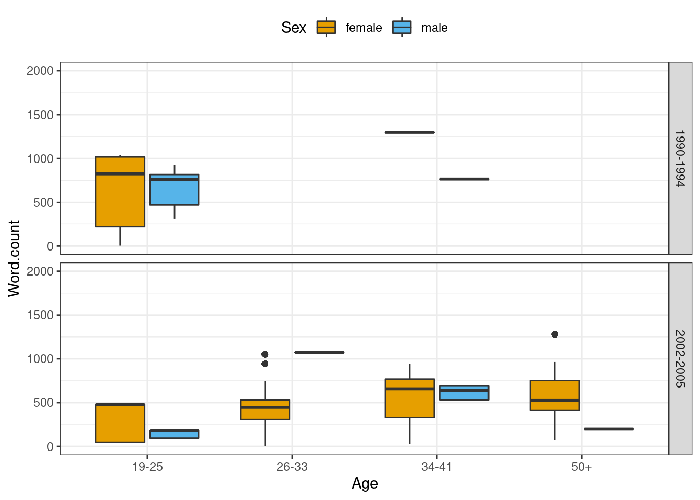
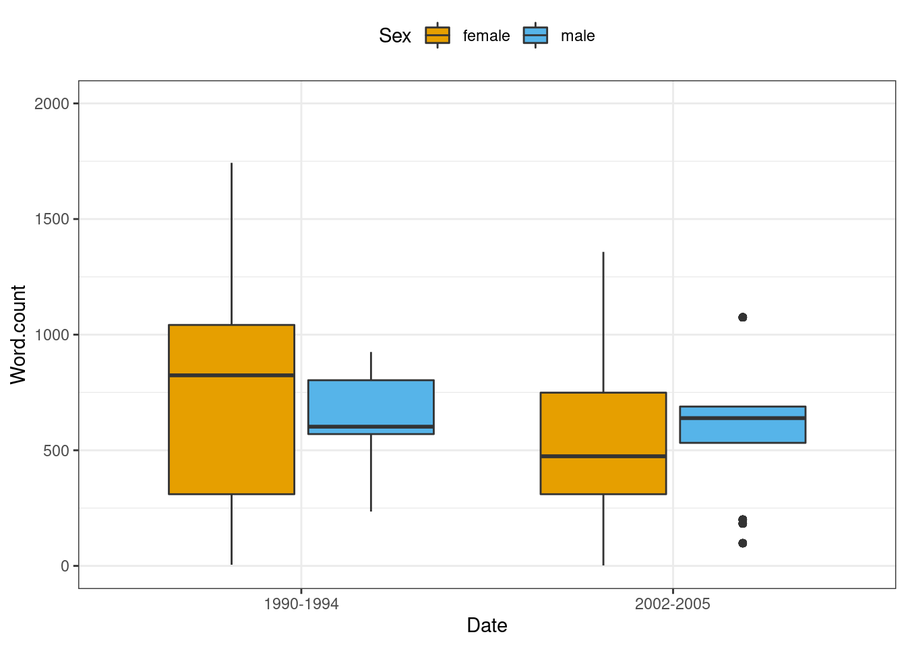
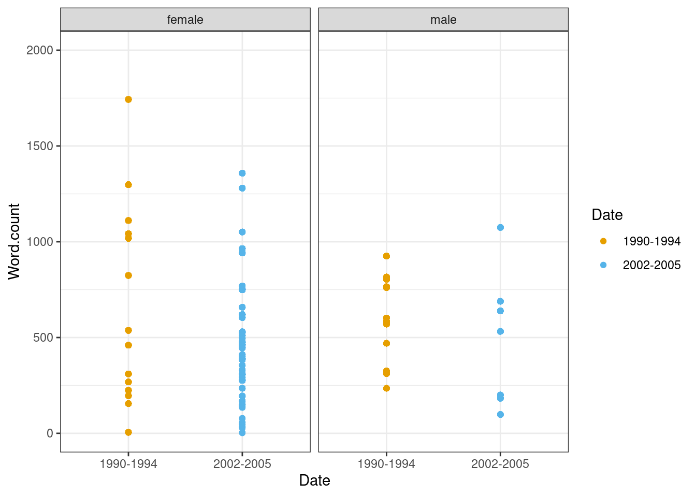

Getting started with R
Introduction

This tutorial shows how to get started with R and it specifically focuses on R for analyzing language data but it offers valuable information for anyone who wants to get started with R. As such, this tutorial is aimed at fresh users or beginners with the aim of showcasing how to set up a R session in RStudio, how to set up R projects, and how to do basic operations using R. The aim is not to provide a fully-fledged from beginner-to-expert, all-you-need-to-know tutorial but rather to show how to properly and tidily set up a project before you start coding and exemplify common operations such as loading and manipulation tabular data and generating basic visualization using R.
The entire R Notebook for the tutorial can be downloaded here. If you want to render the R Notebook on your machine, i.e. knitting the document to html or a pdf, you need to make sure that you have R and RStudio installed and you also need to download the bibliography file and store it in the same folder where you store the Rmd or the Rproj file.
Here is an overview of cheat sheets for popular and frequently used packages providde by RStudio (cheat sheets are short overviews with explanations and examples of useful functions). If you already have experience with R, both [1] (see here) and [2] (see here) are highly recommendable and excellent resources for improving your coding abilities and workflows in R.
Goals of this tutorial
The goals of this tutorial are:
- How to get started with R
- How to orient yourself to R and RStudio
- How to create and work in R projects
- How to know where to look for help and to learn more about R
- Understand the basics of working with data: load data, save data, working with tables, create a simple plot
- Learn some best practices for using R scripts, using data, and projects
- Understand the basics of objects, functions, and indexing
Audience
The intended audience for this tutorial is beginner-level, with no previous experience using R. Thus, no prior knowledge of R is required.
If you want to know more, would like to get some more practice, or would like to have another approach to R, please check out the workshops and resources on R provided by the UQ library. In addition, there are various online resources available to learn R (you can check out a very recommendable introduction here).
Installing R and RStudio
- You have NOT yet installed R on your computer?
- You have NOT yet installed RStudio on your computer?
- Click here for downloading and installing RStudio.
You can find a more elaborate explanation of how to download and install R and RStudio here that was created by the UQ library.
Preparation
Before you actually open R or RStudio, there things to consider that make working in R much easier and give your workflow a better structure.
Imagine it like this: when you want to write a book, you could simply take pen and paper and start writing or you could think about what you want to write about, what different chapters your book would consist of, which chapters to write first, what these chapters will deal with, etc. The same is true for R: you could simply open R and start writing code or you can prepare you session and structure what you will be doing.
Folder Structure and R projects
Before actually starting with writing code, you should prepare the session by going through the following steps:
1. Create a folder for your project
In that folder, create the following sub-folders (you can, of course, adapt this folder template to match your needs)
- data (you do not create this folder for the present workshop as you can simply use the data folder that you downloaded for this workshop instead)
- images
- tables
- docs
The folder for your project could look like the the one shown below.

Once you have created your project folder, you can go ahead with RStudio.
3. Open RStudio
This is what RStudio looks like when you first open it:

In RStudio, click on File

You can use the drop-down menu to create a R project
4. R Projects
In RStudio, click on New Project

Next, confirm by clicking OK and select Existing Directory.
Then, navigate to where you have just created the project folder for this workshop.

Once you click on Open, you have created a new R project
5. R Notebooks
In this project, click on File
Click on New File and then on R Notebook as shown below.

This R Notebook will be the file in which you do all your work.
6. Updating R
In case you encounter issues when opening the R Notebook (e.g., if you receive an error message saying that you need to update packages which then do not install properly), you may have to update your R version.
To update your current R version to the recent release please copy the code chunk shown below into the console pane (the bottom left pane) and click on Enter to run the code. The code will automatically update your version of R to the most recent release. During the update, you may be asked to specify some options - in that case, you can simply click on Accept and Next and accept the default settings.
# install installr package
install.packages("installr")
# load installr package
library(installr)
# update r
updateR()7. Optimizing R project options
When you work with projects, it is recommendable to control the so-called environment. This means that you make your R Project self-contained by storing all packages that are used in project in a library in the R Project (instead of in the general R library on your computer). Having a library in your R Project means that you can share your project folder wit other people and they will automatically have the same package versions that you have sued which makes your code more robust and reproducible.
So, how to create such an environment? You simply click on Tools (at the very top right of RStudio), then click on Project Options then click on Environments and then check Use renv with this project. Now, when you install packages, they will be installed in the package library (rather than the general R library on your computer).
8. Getting started with R Notebooks
You can now start writing in this R Notebook. For instance, you could start by changing the title of the R Notebook and describe what you are doing (what this Notebook contains).
Below is a picture of what this document looked like when I started writing it.

When you write in the R Notebook, you use what is called R Markdown which is explained below.
R Markdown
The Notebook is an R Markdown document: a Rmd (R Markdown) file is more than a flat text document: it’s a program that you can run in R and which allows you to combine prose and code, so readers can see the technical aspects of your work while reading about their interpretive significance.
You can get a nice and short overview of the formatting options in R Markdown (Rmd) files here.
R Markdown allows you to make your research fully transparent and reproducible! If a couple of years down the line another researcher or a journal editor asked you how you have done your analysis, you can simply send them the Notebook or even the entire R-project folder.
As such, Rmd files are a type of document that allows to
- include snippets of code (and any outputs such as tables or graphs) in plain text while
- encoding the structure of your document by using simple typographical symbols to encode formatting (rather than HTML tags or format types such as Main header or Header level 1 in Word).
Markdown is really quite simple to learn and these resources may help:
- The Markdown Wikipedia page includes a very handy chart of the syntax.
- John Gruber developed Markdown and his introduction to the syntax is worth browsing.
- This interactive Markdown tutorial will teach you the syntax in a few minutes.
R and RStudio Basics
RStudio is a so-called IDE - Integrated Development Environment. The interface provides easy access to R. The advantage of this application is that R programs and files as well as a project directory can be managed easily. The environment is capable of editing and running program code, viewing outputs and rendering graphics. Furthermore, it is possible to view variables and data objects of an R-script directly in the interface.
RStudio: Panes
The GUI - Graphical User Interface - that RStudio provides divides the screen into four areas that are called panes:
- File editor
- Environment variables
- R console
- Management panes (File browser, plots, help display and R packages).
The two most important are the R console (bottom left) and the File editor (or Script in the top left). The Environment variables and Management panes are on the right of the screen and they contain:
- Environment (top): Lists all currently defined objects and data sets
- History (top): Lists all commands recently used or associated with a project
- Plots (bottom): Graphical output goes here
- Help (bottom): Find help for R packages and functions. Don’t forget you can type
?before a function name in the console to get info in the Help section. - Files (bottom): Shows the files available to you in your working directory
These RStudio panes are shown below.

R Console (bottom left pane)
The console pane allows you to quickly and immediately execute R code. You can experiment with functions here, or quickly print data for viewing.
Type next to the > and press Enter to execute.
EXERCISE TIME!
`
- You can use R like a calculator. Try typing
2+8into the R console.
Answer
::: {.cell hash=‘Intror_cache/html/calculator_384ae3e9df5cd3aec9622be59a2f2998’}
2+8::: {.cell-output .cell-output-stdout} [1] 10 ::: :::
Here, the plus sign is the operator. Operators are symbols that represent some sort of action. However, R is, of course, much more than a simple calculator. To use R more fully, we need to understand objects, functions, and indexing - which we will learn about as we go.
For now, think of objects as nouns and functions as verbs.
Running commands from a script
To run code from a script, insert your cursor on a line with a command, and press CTRL/CMD+Enter.
Or highlight some code to only run certain sections of the command, then press CTRL/CMD+Enter to run.
Alternatively, use the Run button at the top of the pane to execute the current line or selection (see below).

Script Editor (top left pane)
In contrast to the R console, which quickly runs code, the Script Editor (in the top left) does not automatically execute code. The Script Editor allows you to save the code essential to your analysis. You can re-use that code in the moment, refer back to it later, or publish it for replication.
Now, that we have explored RStudio, we are ready to get started with R!
Getting started with R
This section introduces some basic concepts and procedures that help optimize your workflow in R.
Setting up an R session
At the beginning of a session, it is common practice to define some basic parameters. This is not required or even necessary, but it may just help further down the line. This session preparation may include specifying options. In the present case, we
- want R to show numbers as numbers up to 100 decimal points (and not show them in mathematical notation (in mathematical notation, 0.007 would be represented as 0.7e-3))
- want R to show maximally 100 results (otherwise, it can happen that R prints out pages-after-pages of some numbers).
Again, the session preparation is not required or necessary but it can help avoid errors.
# set options
options(stringsAsFactors = F)
options(scipen = 100)
options(max.print=100) In script editor pane of RStudio, this would look like this:

Packages
When using R, most of the functions are not loaded or even installing automatically. Instead, most functions are in contained in what are called packages.
R comes with about 30 packages (“base R”). There are over 10,000 user-contributed packages; you can discover these packages online. A prevalent collection of packages is the Tidyverse, which includes ggplot2, a package for making graphics.
Before being able to use a package, we need to install the package (using the install.packages function) and load the package (using the library function). However, a package only needs to be installed once(!) and can then simply be loaded. When you install a package, this will likely install several other packages it depends on. You should have already installed tidyverse before the workshop.
You must load the package in any new R session where you want to use that package. Below I show what you need to type when you want to install the tidyverse, the tidytext, the quanteda, the readxl, and the tm packages (which are the packages that we will need in this workshop).
install.packages("tidyverse")
install.packages("tidytext")
install.packages("quanteda")
install.packages("readxl")
install.packages("tm")
install.packages("tokenizers")
install.packages("here")
install.packages("flextable")
# install klippy for copy-to-clipboard button in code chunks
install.packages("remotes")
remotes::install_github("rlesur/klippy")To load these packages, use the library function which takes the package name as its main argument.
library(tidyverse)
library(tidytext)
library(quanteda)
library(readxl)
library(tm)
library(tokenizers)
library(here)
library(flextable)
# activate klippy for copy-to-clipboard button
klippy::klippy()The session preparation section of your Rmd file will thus also state which packages a script relies on.
In script editor pane of RStudio, the code blocks that install and activate packages would look like this:

Getting help
When working with R, you will encounter issues and face challenges. A very good thing about R is that it provides various ways to get help or find information about the issues you face.
Finding help within R
To get help regrading what functions a package contains, which arguments a function takes or to get information about how to use a function, you can use the help function or the apropos. function or you can simply type a ? before the package or two ?? if this does not give you any answers.
help(tidyverse)
apropos("tidyverse")
?requireThere are also other “official” help resources from R/RStudio.
- Read official package documentation, see vignettes, e.g., Tidyverse https://cran.r-project.org/package=tidyverse
- Use the RStudio Cheat Sheets at https://www.rstudio.com/resources/cheatsheets/
- Use the RStudio Help viewer by typing
?before a function or package - Check out the keyboard shortcuts
HelpunderToolsin RStudio for some good tips
Finding help online
One great thing about R is that you can very often find an answer to your question online.
- Google your error! See http://r4ds.had.co.nz/introduction.html#getting-help-and-learning-more for excellent suggestions on how to find help for a specific question online.
Working with tables
We will now start working with data in R. As most of the data that we work with comes in tables, we will focus on this first before moving on to working with text data.
Loading data from the web
To show, how data can be downloaded from the web, we will download a tab-separated txt-file. Translated to prose, the code below means Create an object called icebio and in that object, store the result of the read.delim function.
read.delim stands for read delimited file and it takes the URL from which to load the data (or the path to the data on your computer) as its first argument. The sep stand for separator and the \t stands for tab-separated and represents the second argument that the read.delim function takes. The third argument, header, can take either T(RUE) or F(ALSE) and it tells R if the data has column names (headers) or not.
Functions and Objects
In R, functions always have the following form: function(argument1, argument2, ..., argumentN). Typically a function does something to an object (e.g. a table), so that the first argument typically specifies the data to which the function is applied. Other arguments then allow to add some information. Just as a side note, functions are also objects that do not contain data but instructions.
To assign content to an object, we use <- or = so that the we provide a name for an object, and then assign some content to it. For example, MyObject <- 1:3 means Create an object called MyObject. this object should contain the numbers 1 to 3.
# load data
icebio <- read.delim("https://slcladal.github.io/data/BiodataIceIreland.txt",
sep = "\t", header = T)Inspecting data
There are many ways to inspect data. We will briefly go over the most common ways to inspect data.
The head function takes the data-object as its first argument and automatically shows the first 6 elements of an object (or rows if the data-object has a table format).
head(icebio) id file.speaker.id text.id spk.ref zone date sex age
1 1 <S1A-001$A> S1A-001 A northern ireland 1990-1994 male 34-41
2 2 <S1A-001$B> S1A-001 B northern ireland 1990-1994 female 34-41
3 3 <S1A-002$?> S1A-002 ? <NA> <NA> <NA> <NA>
4 4 <S1A-002$A> S1A-002 A northern ireland 2002-2005 female 26-33
5 5 <S1A-002$B> S1A-002 B northern ireland 2002-2005 female 19-25
6 6 <S1A-002$C> S1A-002 C northern ireland 2002-2005 male 50+
word.count
1 765
2 1298
3 23
4 391
5 47
6 200We can also use the head function to inspect more or less elements and we can specify the number of elements (or rows) that we want to inspect as a second argument. In the example below, the 4 tells R that we only want to see the first 4 rows of the data.
head(icebio, 4) id file.speaker.id text.id spk.ref zone date sex age
1 1 <S1A-001$A> S1A-001 A northern ireland 1990-1994 male 34-41
2 2 <S1A-001$B> S1A-001 B northern ireland 1990-1994 female 34-41
3 3 <S1A-002$?> S1A-002 ? <NA> <NA> <NA> <NA>
4 4 <S1A-002$A> S1A-002 A northern ireland 2002-2005 female 26-33
word.count
1 765
2 1298
3 23
4 391EXERCISE TIME!
- Download and inspect the first 7 rows of the data set that you can find under this URL:
https://slcladal.github.io/data/lmmdata.txt. Can you guess what the data is about?
Answer
::: {.cell hash=‘Intror_cache/html/loadtext_74890227f2182e7752a676a6a9e86f6d’}
ex1data <- read.delim("https://slcladal.github.io/data/lmmdata.txt", sep = "\t")
head(ex1data, 7)::: {.cell-output .cell-output-stdout} Date Genre Text Prepositions Region 1 1736 Science albin 166.01 North 2 1711 Education anon 139.86 North 3 1808 PrivateLetter austen 130.78 North 4 1878 Education bain 151.29 North 5 1743 Education barclay 145.72 North 6 1908 Education benson 120.77 North 7 1906 Diary benson 119.17 North ::: :::
Date), the genre the texts represent (Genre), the name of the texts (Text), the relative frequencies of prepositions the texts contain (Prepositions), and the region where the author was from (Region).
Accessing individual cells in a table
If you want to access specific cells in a table, you can do so by typing the name of the object and then specify the rows and columns in square brackets (i.e. data[row, column]). For example, icebio[2, 4] would show the value of the cell in the second row and fourth column of the object icebio. We can also use the colon to define a range (as shown below, where 1:5 means from 1 to 5 and 1:3 means from 1 to 3) The command icebio[1:5, 1:3] thus means:
Show me the first 5 rows and the first 3 columns of the data-object that is called icebio.
icebio[1:5, 1:3] id file.speaker.id text.id
1 1 <S1A-001$A> S1A-001
2 2 <S1A-001$B> S1A-001
3 3 <S1A-002$?> S1A-002
4 4 <S1A-002$A> S1A-002
5 5 <S1A-002$B> S1A-002EXERCISE TIME!
`
- How would you inspect the content of the cells in 4th column, rows 3 to 5 of the
icebiodata set?
Answer
::: {.cell hash=‘Intror_cache/html/unnamed-chunk-12_63e7e5a4a8e03856905b7ec6c0fa5b09’}
icebio[3:5, 4]::: {.cell-output .cell-output-stdout} [1] "?" "A" "B" ::: :::
Inspecting the structure of data
You can use the str function to inspect the structure of a data set. This means that this function will show the number of observations (rows) and variables (columns) and tell you what type of variables the data consists of
- int = integer
- chr = character string
- num = numeric
- fct = factor
str(icebio)'data.frame': 1332 obs. of 9 variables:
$ id : int 1 2 3 4 5 6 7 8 9 10 ...
$ file.speaker.id: chr "<S1A-001$A>" "<S1A-001$B>" "<S1A-002$?>" "<S1A-002$A>" ...
$ text.id : chr "S1A-001" "S1A-001" "S1A-002" "S1A-002" ...
$ spk.ref : chr "A" "B" "?" "A" ...
$ zone : chr "northern ireland" "northern ireland" NA "northern ireland" ...
$ date : chr "1990-1994" "1990-1994" NA "2002-2005" ...
$ sex : chr "male" "female" NA "female" ...
$ age : chr "34-41" "34-41" NA "26-33" ...
$ word.count : int 765 1298 23 391 47 200 464 639 308 78 ...The summary function summarizes the data.
summary(icebio) id file.speaker.id text.id spk.ref
Min. : 1.0 Length:1332 Length:1332 Length:1332
1st Qu.: 333.8 Class :character Class :character Class :character
Median : 666.5 Mode :character Mode :character Mode :character
Mean : 666.5
3rd Qu.: 999.2
Max. :1332.0
zone date sex age
Length:1332 Length:1332 Length:1332 Length:1332
Class :character Class :character Class :character Class :character
Mode :character Mode :character Mode :character Mode :character
word.count
Min. : 0.0
1st Qu.: 66.0
Median : 240.5
Mean : 449.9
3rd Qu.: 638.2
Max. :2565.0 Tabulating data
We can use the table function to create basic tables that extract raw frequency information. The following command tells us how many instances there are of each level of the variable date in the icebio.
TIP
In order to access specific columns of a data frame, you can first type the name of the data set followed by a $ symbol and then the name of the column (or variable).
table(icebio$date)
1990-1994 1995-2001 2002-2005
905 67 270 Alternatively, you could, of course, index the column by using its position in the data set like this: icebio[, 6] - the result of table(icebio[, 6]) and table(icebio$date) are the same! Also note that here we leave out indexes for rows to tell R that we want all rows.
When you want to cross-tabulate columns, it is often better to use the ftable function (ftable stands for frequency table).
ftable(icebio$age, icebio$sex) female male
0-18 5 7
19-25 163 65
26-33 83 36
34-41 35 58
42-49 35 97
50+ 63 138EXERCISE TIME!
- Using the
tablefunction, how many women are in the data collected between 2002 and 2005?
Answer
::: {.cell hash=‘Intror_cache/html/unnamed-chunk-17_de58236c617c3a56bb9f2a344e1aaad3’}
table(icebio$date, icebio$sex)::: {.cell-output .cell-output-stdout} ```
female male
1990-1994 338 562
1995-2001 4 58
2002-2005 186 84 :::
:::
</details>
2. Using the `ftable` function, how many men are are from northern Ireland in the data collected between 1990 and 1994?
<details>
<summary>Answer</summary>
::: {.cell hash='Intror_cache/html/unnamed-chunk-18_d776ae039af22c8b2ad2bdad3e9de230'}
```{.r .cell-code}
ftable(icebio$date, icebio$zone, icebio$sex)::: {.cell-output .cell-output-stdout} ``` female male
1990-1994 mixed between ni and roi 18 13 non-corpus speaker 7 22 northern ireland 104 289 republic of ireland 209 238 1995-2001 mixed between ni and roi 0 0 non-corpus speaker 1 1 northern ireland 2 36 republic of ireland 1 21 2002-2005 mixed between ni and roi 19 7 non-corpus speaker 7 9 northern ireland 122 41 republic of ireland 38 27 ``` ::: :::
Saving data to your computer
To save tabular data on your computer, you can use the write.table function. This function requires the data that you want to save as its first argument, the location where you want to save the data as the second argument and the type of delimiter as the third argument.
write.table(icebio, here::here("data", "icebio.txt"), sep = "\t") A word about paths
In the code chunk above, the sequence here::here("data", "icebio.txt") is a handy way to define a path. A path is simply the location where a file is stored on your computer or on the internet (which typically is a server - which is just a fancy term for a computer - somewhere on the globe). The here function from thehere package allows to simply state in which folder a certain file is and what file you are talking about.
In this case, we want to access the file icebio (which is a txt file and thus has the appendix .txt) in the data folder. R will always start looking in the folder in which your project is stored. If you want to access a file that is stored somewhere else on your computer, you can also define the full path to the folder in which the file is. In my case, this would be D:/Uni/UQ/SLC/LADAL/SLCLADAL.github.io/data. However, as the data folder in in the folder where my Rproj file is, I only need to specify that the file is in the data folder within the folder in which my Rproj file is located.
A word about package naming
Another thing that is notable in the sequence here::here("data", "icebio.txt") is that I specified that the here function is part of the here package. This is what I meant by writing here::here which simply means use the here function from here package (package::function). This may appear to be somewhat redundant but it happens quite frequently, that different packages have functions that have the same names. In such cases, R will simply choose the function from the package that was loaded last. To prevent R from using the wrong function, it makes sense to specify the package AND the function (as I did in the sequence here::here). I only use functions without specify the package if the function is part of base R.
Loading data from your computer
To load tabular data from within your project folder (if it is in a tab-separated txt-file) you can also use the read.delim function. The only difference to loading from the web is that you use a path instead of a URL. If the txt-file is in the folder called data in your project folder, you would load the data as shown below.
icebio <- read.delim(here::here("data", "icebio.txt"), sep = "\t", header = T)However, you can always just use the full path (and you must do this is the data is not in your project folder).
NOTE
You may have to change the path to the data!
icebio <- read.delim(here::here("data", "icebio.txt"),
sep = "\t", header = T)To if this has worked, we will use the head function to see first 6 rows of the data
head(icebio) id file.speaker.id text.id spk.ref zone date sex age
1 1 <S1A-001$A> S1A-001 A northern ireland 1990-1994 male 34-41
2 2 <S1A-001$B> S1A-001 B northern ireland 1990-1994 female 34-41
3 3 <S1A-002$?> S1A-002 ? <NA> <NA> <NA> <NA>
4 4 <S1A-002$A> S1A-002 A northern ireland 2002-2005 female 26-33
5 5 <S1A-002$B> S1A-002 B northern ireland 2002-2005 female 19-25
6 6 <S1A-002$C> S1A-002 C northern ireland 2002-2005 male 50+
word.count
1 765
2 1298
3 23
4 391
5 47
6 200Loading Excel data
To load Excel spreadsheets, you can use the read_excel function from the readxl package as shown below. However, it may be necessary to install and activate the readxl package first.
icebio <- readxl::read_excel(here::here("data", "ICEdata.xlsx"))We now briefly check column names to see if the loading of the data has worked.
colnames(icebio)[1] "id" "file.speaker.id" "text.id" "spk.ref"
[5] "zone" "date" "sex" "age"
[9] "word.count" Loading text data
There are many functions that we can use to load text data into R. For example, we can use the readLines function as shown below.
text <- readLines(here::here("data", "text2.txt"))
# inspect first text element
text[1][1] "The book is presented as a manuscript written by its protagonist, a middle-aged man named Harry Haller, who leaves it to a chance acquaintance, the nephew of his landlady. The acquaintance adds a short preface of his own and then has the manuscript published. The title of this \"real\" book-in-the-book is Harry Haller's Records (For Madmen Only)."To load many texts, we can use a loop to read all texts in a folder as shown below. In a first step, we define the paths of the texts and then, we use the sapply function to loop over the paths and read them into R.
# define paths
paths <- list.files(here::here("data/testcorpus"), full.names = T)
# load texts
texts <- sapply(paths, function(x){ readLines(x) })
# inspect first text element
texts[1]$`/home/sam/programming/SLCLADAL.github.io/data/testcorpus/linguistics01.txt`
[1] "Linguistics is the scientific study of language. It involves analysing language form language meaning and language in context. The earliest activities in the documentation and description of language have been attributed to the th-century-BC Indian grammarian Pa?ini who wrote a formal description of the Sanskrit language in his A??adhyayi."
[2] ""
[3] "Linguists traditionally analyse human language by observing an interplay between sound and meaning. Phonetics is the study of speech and non-speech sounds and delves into their acoustic and articulatory properties. The study of language meaning on the other hand deals with how languages encode relations between entities properties and other aspects of the world to convey process and assign meaning as well as manage and resolve ambiguity. While the study of semantics typically concerns itself with truth conditions pragmatics deals with how situational context influences the production of meaning. "A method achieving the same result which uses piping (more on what that is below) and tidyverse R code is shown below.
# define paths
texts <- list.files(here::here("data/testcorpus"), full.names = T, pattern = ".*txt") %>%
purrr::map_chr(~ readr::read_file(.))
# inspect first text element
texts[1][1] "Linguistics is the scientific study of language. It involves analysing language form language meaning and language in context. The earliest activities in the documentation and description of language have been attributed to the th-century-BC Indian grammarian Pa?ini who wrote a formal description of the Sanskrit language in his A??adhyayi.\n\nLinguists traditionally analyse human language by observing an interplay between sound and meaning. Phonetics is the study of speech and non-speech sounds and delves into their acoustic and articulatory properties. The study of language meaning on the other hand deals with how languages encode relations between entities properties and other aspects of the world to convey process and assign meaning as well as manage and resolve ambiguity. While the study of semantics typically concerns itself with truth conditions pragmatics deals with how situational context influences the production of meaning. "Renaming, Piping, and Filtering
To rename existing columns in a table, you can use the rename command which takes the table as the first argument, the new name as the second argument, the an equal sign (=), and finally, the old name es the third argument. For example, renaming a column OldName as NewName in a table called MyTable would look like this: rename(MyTable, NewName = OldName).
Piping is done using the %>% sequence and it can be translated as and then. In the example below, we create a new object (icebio_edit) from the existing object (icebio) and then we rename the columns in the new object. When we use piping, we do not need to name the data we are using as this is provided by the previous step.
icebio_edit <- icebio %>%
dplyr::rename(Id = id,
FileSpeakerId = file.speaker.id,
File = colnames(icebio)[3],
Speaker = colnames(icebio)[4])
# inspect data
icebio_edit[1:5, 1:6]# A tibble: 5 × 6
Id FileSpeakerId File Speaker zone date
<dbl> <chr> <chr> <chr> <chr> <chr>
1 1 <S1A-001$A> S1A-001 A northern ireland 1990-1994
2 2 <S1A-001$B> S1A-001 B northern ireland 1990-1994
3 3 <S1A-002$?> S1A-002 ? NA NA
4 4 <S1A-002$A> S1A-002 A northern ireland 2002-2005
5 5 <S1A-002$B> S1A-002 B northern ireland 2002-2005A very handy way to rename many columns simultaneously, you can use the str_to_title function which capitalizes first letter of a word. In the example below, we capitalize all first letters of the column names of our current data.
colnames(icebio_edit) <- stringr::str_to_title(colnames(icebio_edit))
# inspect data
icebio_edit[1:5, 1:6]# A tibble: 5 × 6
Id Filespeakerid File Speaker Zone Date
<dbl> <chr> <chr> <chr> <chr> <chr>
1 1 <S1A-001$A> S1A-001 A northern ireland 1990-1994
2 2 <S1A-001$B> S1A-001 B northern ireland 1990-1994
3 3 <S1A-002$?> S1A-002 ? NA NA
4 4 <S1A-002$A> S1A-002 A northern ireland 2002-2005
5 5 <S1A-002$B> S1A-002 B northern ireland 2002-2005To remove rows based on values in columns you can use the filter function.
icebio_edit2 <- icebio_edit %>%
dplyr::filter(Speaker != "?",
Zone != is.na(Zone),
Date == "2002-2005",
Word.count > 5)
# inspect data
head(icebio_edit2)# A tibble: 6 × 9
Id Filespeakerid File Speaker Zone Date Sex Age Word.count
<dbl> <chr> <chr> <chr> <chr> <chr> <chr> <chr> <dbl>
1 4 <S1A-002$A> S1A-002 A northern ire… 2002… fema… 26-33 391
2 5 <S1A-002$B> S1A-002 B northern ire… 2002… fema… 19-25 47
3 6 <S1A-002$C> S1A-002 C northern ire… 2002… male 50+ 200
4 7 <S1A-002$D> S1A-002 D northern ire… 2002… fema… 50+ 464
5 8 <S1A-002$E> S1A-002 E mixed betwee… 2002… male 34-41 639
6 9 <S1A-002$F> S1A-002 F northern ire… 2002… fema… 26-33 308To select specific columns you can use the select function.
icebio_selection <- icebio_edit2 %>%
dplyr::select(File, Speaker, Word.count)
# inspect data
head(icebio_selection)# A tibble: 6 × 3
File Speaker Word.count
<chr> <chr> <dbl>
1 S1A-002 A 391
2 S1A-002 B 47
3 S1A-002 C 200
4 S1A-002 D 464
5 S1A-002 E 639
6 S1A-002 F 308You can also use the select function to remove specific columns.
icebio_selection2 <- icebio_edit2 %>%
dplyr::select(-Id, -File, -Speaker, -Date, -Zone, -Age)
# inspect data
head(icebio_selection2)# A tibble: 6 × 3
Filespeakerid Sex Word.count
<chr> <chr> <dbl>
1 <S1A-002$A> female 391
2 <S1A-002$B> female 47
3 <S1A-002$C> male 200
4 <S1A-002$D> female 464
5 <S1A-002$E> male 639
6 <S1A-002$F> female 308Ordering data
To order data, for instance, in ascending order according to a specific column you can use the arrange function.
icebio_ordered_asc <- icebio_selection2 %>%
dplyr::arrange(Word.count)
# inspect data
head(icebio_ordered_asc)# A tibble: 6 × 3
Filespeakerid Sex Word.count
<chr> <chr> <dbl>
1 <S1B-009$D> female 6
2 <S1B-005$C> female 7
3 <S1B-009$C> male 7
4 <S1B-020$F> male 7
5 <S1B-006$G> female 9
6 <S2A-050$B> male 9To order data in descending order you can also use the arrange function and simply add a - before the column according to which you want to order the data.
icebio_ordered_desc <- icebio_selection2 %>%
dplyr::arrange(-Word.count)
# inspect data
head(icebio_ordered_desc)# A tibble: 6 × 3
Filespeakerid Sex Word.count
<chr> <chr> <dbl>
1 <S2A-055$A> female 2355
2 <S2A-047$A> male 2340
3 <S2A-035$A> female 2244
4 <S2A-048$A> male 2200
5 <S2A-015$A> male 2172
6 <S2A-054$A> female 2113The output shows that the female speaker in file S2A-005 with the speaker identity A has the highest word count with 2,355 words.
EXERCISE TIME!
`
- Using the data called
icebio, create a new data set calledICE_Ire_orderedand arrange the data in descending order by the number of words that each speaker has uttered. Who is the speaker with the highest word count?
Answer
::: {.cell hash=‘Intror_cache/html/unnamed-chunk-32_1f9c78a99c8149d99ca8355e4372dc21’}
ICE_Ire_ordered <- icebio %>%
dplyr::arrange(-word.count)
# inspect data
head(ICE_Ire_ordered)::: {.cell-output .cell-output-stdout} # A tibble: 6 × 9 id file.speaker.id text.id spk.ref zone date sex age word.count <dbl> <chr> <chr> <chr> <chr> <chr> <chr> <chr> <dbl> 1 956 <S2A-037$A> S2A-037 A republic o… 1990… male NA 2565 2 919 <S2A-016$A> S2A-016 A republic o… 1995… fema… 34-41 2482 3 933 <S2A-023$A> S2A-023 A northern i… 1990… male 50+ 2367 4 992 <S2A-055$A> S2A-055 A northern i… 2002… fema… 42-49 2355 5 979 <S2A-047$A> S2A-047 A republic o… 2002… male 50+ 2340 6 997 <S2A-059$A> S2A-059 A republic o… 1990… fema… NA 2305 ::: :::
`
Creating and changing variables
New columns are created, and existing columns can be changed, by using the mutate function. The mutate function takes two arguments (if the data does not have to be specified): the first argument is the (new) name of column that you want to create and the second is what you want to store in that column. The = tells R that the new column will contain the result of the second argument.
In the example below, we create a new column called Texttype.
This new column should contain
- the value PrivateDialoge if Filespeakerid contains the sequence S1A,
- the value PublicDialogue if Filespeakerid contains the sequence S1B,
- the value UnscriptedMonologue if Filespeakerid contains the sequence S2A,
- the value ScriptedMonologue if Filespeakerid contains the sequence S2B,
- the value of Filespeakerid if Filespeakerid neither contains S1A, S1B, S2A, nor S2B.
icebio_texttype <- icebio_selection2 %>%
dplyr::mutate(Texttype =
dplyr::case_when(stringr::str_detect(Filespeakerid ,"S1A") ~ "PrivateDialoge",
stringr::str_detect(Filespeakerid ,"S1B") ~ "PublicDialogue",
stringr::str_detect(Filespeakerid ,"S2A") ~ "UnscriptedMonologue",
stringr::str_detect(Filespeakerid ,"S2B") ~ "ScriptedMonologue",
TRUE ~ Filespeakerid))
# inspect data
head(icebio_texttype)# A tibble: 6 × 4
Filespeakerid Sex Word.count Texttype
<chr> <chr> <dbl> <chr>
1 <S1A-002$A> female 391 PrivateDialoge
2 <S1A-002$B> female 47 PrivateDialoge
3 <S1A-002$C> male 200 PrivateDialoge
4 <S1A-002$D> female 464 PrivateDialoge
5 <S1A-002$E> male 639 PrivateDialoge
6 <S1A-002$F> female 308 PrivateDialogeIf-statements
We should briefly talk about if-statements (or case_when in the present case). The case_when function is both very powerful and extremely helpful as it allows you to assign values based on a test. As such, case_when-statements can be read as:
When/If X is the case, then do A and if X is not the case do B! (When/If -> Then -> Else)
The nice thing about ifelse or case_when-statements is that they can be used in succession as we have done above. This can then be read as:
If X is the case, then do A, if Y is the case, then do B, else do Z
EXERCISE TIME!
1.Using the data called icebio, create a new data set called ICE_Ire_AgeGroup in which you create a column called AgeGroup where all speakers who are younger than 42 have the value young and all speakers aged 42 and over old.
Tip: use if-statements to assign the old and young values.
Answer
ICE_Ire_AgeGroup <- icebio %>%
dplyr::mutate(AgeGroup = dplyr::case_when(age == "42-49" ~ "old",
age == "50+" ~ "old",
age == "0-18" ~ "young",
age == "19-25" ~ "young",
age == "26-33" ~ "young",
age == "34-41" ~ "young",
TRUE ~age))
# inspect data
head(ICE_Ire_AgeGroup); table(ICE_Ire_AgeGroup$AgeGroup)::: {.cell-output .cell-output-stdout} # A tibble: 6 × 10 id file.speaker.id text.id spk.ref zone date sex age word.count <dbl> <chr> <chr> <chr> <chr> <chr> <chr> <chr> <dbl> 1 1 <S1A-001$A> S1A-001 A northern i… 1990… male 34-41 765 2 2 <S1A-001$B> S1A-001 B northern i… 1990… fema… 34-41 1298 3 3 <S1A-002$?> S1A-002 ? NA NA NA NA 23 4 4 <S1A-002$A> S1A-002 A northern i… 2002… fema… 26-33 391 5 5 <S1A-002$B> S1A-002 B northern i… 2002… fema… 19-25 47 6 6 <S1A-002$C> S1A-002 C northern i… 2002… male 50+ 200 # … with 1 more variable: AgeGroup <chr> :::
::: {.cell-output .cell-output-stdout} ```
NA old young
547 333 452 :::
:::
</details>
</div>
***
## Summarizing data{-}
Summarizing is really helpful and can be done using the `summarise` function.
::: {.cell hash='Intror_cache/html/unnamed-chunk-35_559adc209309c64bb0b26ef6a6473cb3'}
```{.r .cell-code}
icebio_summary1 <- icebio_texttype %>%
dplyr::summarise(Words = sum(Word.count))
# inspect data
head(icebio_summary1)# A tibble: 1 × 1
Words
<dbl>
1 141876To get summaries of sub-groups or by variable level, we can use the group_by function and then use the summarise function.
icebio_summary2 <- icebio_texttype %>%
dplyr::group_by(Texttype, Sex) %>%
dplyr::summarise(Speakers = n(),
Words = sum(Word.count))
# inspect data
head(icebio_summary2)# A tibble: 6 × 4
# Groups: Texttype [3]
Texttype Sex Speakers Words
<chr> <chr> <int> <dbl>
1 PrivateDialoge female 105 60024
2 PrivateDialoge male 18 9628
3 PublicDialogue female 63 24647
4 PublicDialogue male 41 16783
5 UnscriptedMonologue female 3 6712
6 UnscriptedMonologue male 16 24082EXERCISE TIME!
- Use the
icebioand determine the number of words uttered by female speakers from Northern Ireland above an age of 50.
Answer
::: {.cell hash=‘Intror_cache/html/unnamed-chunk-37_33d7800430fd04eaa314c38ad85efb60’}
words_fni50 <- icebio %>%
dplyr::select(zone, sex, age, word.count) %>%
dplyr::group_by(zone, sex, age) %>%
dplyr::summarize(Words = sum(word.count)) %>%
dplyr::filter(sex == "female",
age == "50+",
zone == "northern ireland")::: {.cell-output .cell-output-stderr} `summarise()` has grouped output by 'zone', 'sex'. You can override using the `.groups` argument. :::
# inspect data
words_fni50::: {.cell-output .cell-output-stdout} # A tibble: 1 × 4 # Groups: zone, sex [1] zone sex age Words <chr> <chr> <chr> <dbl> 1 northern ireland female 50+ 23210 ::: :::
- Load the file exercisedata.txt and determine the mean scores of groups A and B.
Tip: to extract the mean, combine the summary function with the mean function.
Answer
::: {.cell hash=‘Intror_cache/html/unnamed-chunk-38_6d993b9c9603ab2f3e9362da9881244a’}
exercisedata <- read.delim(here::here("data", "exercisedata.txt"), sep = "\t", header = T) %>%
dplyr::group_by(Group) %>%
dplyr::summarize(Mean = mean(Score))
# inspect data
exercisedata::: {.cell-output .cell-output-stdout} # A tibble: 2 × 2 Group Mean <chr> <dbl> 1 A 14.9 2 B 11.8 ::: :::
Gathering and spreading data
The tidyr package has two very useful functions for gathering and spreading data that can be sued to transform data to long and wide formats (you will see what this means below). The functions are called gather and spread.
We will use the data set called icebio_summary2, which we created above, to demonstrate how this works.
We will first check out the spread-function to create different columns for women and men that show how many of them are represented in the different text types.
icebio_summary_wide <- icebio_summary2 %>%
dplyr::select(-Words) %>%
tidyr::spread(Sex, Speakers)
# inspect
icebio_summary_wide# A tibble: 3 × 3
# Groups: Texttype [3]
Texttype female male
<chr> <int> <int>
1 PrivateDialoge 105 18
2 PublicDialogue 63 41
3 UnscriptedMonologue 3 16The data is now in what is called a wide-format as values are distributed across columns.
To reformat this back to a long-format where each column represents exactly one variable, we use the gather-function:
icebio_summary_long <- icebio_summary_wide %>%
tidyr::gather(Sex, Speakers, female:male)
# inspect
icebio_summary_long# A tibble: 6 × 3
# Groups: Texttype [3]
Texttype Sex Speakers
<chr> <chr> <int>
1 PrivateDialoge female 105
2 PublicDialogue female 63
3 UnscriptedMonologue female 3
4 PrivateDialoge male 18
5 PublicDialogue male 41
6 UnscriptedMonologue male 16More on working with text
We have now worked though how to load, save, and edit tabulated data. However, R is also perfectly equipped for working with textual data which is what we going to concentrate on now.
Loading text data
To load text data from the web, we can use the read_file function which takes the URL of the text as its first argument. In this case will will load the 2016 rally speeches Donald Trump.
Trump <-base::readRDS(url("https://slcladal.github.io/data/Trump.rda", "rb"))
# inspect data
str(Trump)'data.frame': 2694 obs. of 1 variable:
$ SPEECH: chr "...Thank you so much. That's so nice. Isn't he a great guy. He doesn't get a fair press; he doesn't get it. "| __truncated__ "With that said, our country is really headed in the wrong direction with a president who is doing an absolutely"| __truncated__ "And I'm a conservative, actually very conservative, and I'm a Republican. And I'm very disappointed by our Rep"| __truncated__ "You look at Obamacare. A total catastrophe and by the way it really kicks in in '16 and it is going to be a di"| __truncated__ ...It is very easy to extract frequency information and to create frequency lists. We can do this by first using the unnest_tokens function which splits texts into individual words, an then use the count function to get the raw frequencies of all word types in a text.
Trump %>%
tibble(text = SPEECH) %>%
unnest_tokens(word, text) %>%
dplyr::count(word, sort=T)# A tibble: 6,102 × 2
word n
<chr> <int>
1 the 5924
2 to 5460
3 and 5438
4 i 4873
5 a 3592
6 you 3055
7 of 2953
8 we 2565
9 it 2421
10 that 2317
# … with 6,092 more rowsExtracting N-grams is also very easy as the unnest_tokens function can an argument called token in which we can specify that we want to extract n-grams, If we do this, then we need to specify the n as a separate argument. Below we specify that we want the frequencies of all 4-grams.
Trump %>%
tibble(text = SPEECH) %>%
unnest_tokens(word, text, token="ngrams", n=4) %>%
dplyr::count(word, sort=T) %>%
head(10)# A tibble: 10 × 2
word n
<chr> <int>
1 and we’re going to 93
2 we are going to 75
3 <NA> 68
4 it’s going to be 65
5 we’re going to do 61
6 we’re going to have 61
7 not going to happen 60
8 and by the way 53
9 thank you very much 52
10 we’re going to win 50Splitting-up texts
We can use the str_split function to split texts. However, there are two issues when using this (very useful) function:
- the pattern that we want to split on disappears
- the output is a list (a special type of data format)
To remedy these issues, we
- combine the
str_splitfunction with theunlistfunction - add something right at the beginning of the pattern that we use to split the text. To add something to the beginning of the pattern that we want to split the text by, we use the
str_replace_allfunction. Thestr_replace_allfunction takes three arguments, 1. the text, 2. the pattern that should be replaced, 3. the replacement. In the example below, we add~~~to the sequenceSPEECHand then split on the~~~rather than on the sequence “SPEECH” (in other words, we replaceSPEECHwith~~~SPEECHand then split on~~~).
Trump_split <- unlist(str_split(
stringr::str_replace_all(Trump, "SPEECH", "~~~SPEECH"),
pattern = "~~~"))
# inspect data
nchar(Trump_split)#; str(Trump_split) [1] 21311 26963 2701 6004 1342 32880 28497 425099 1404 311770
[11] 43776Cleaning texts
When working with texts, we usually need to clean the data. Below, we do some very basic cleaning using a pipeline.
Trump_split_clean <- Trump_split %>%
# replace elements
stringr::str_replace_all(fixed("\n"), " ") %>%
# remove strange symbols
stringr::str_replace_all("[^[:alnum:][:punct:]]+", " ") %>%
# combine contractions
stringr::str_replace_all(" re ", "'re ") %>%
stringr::str_replace_all(" ll ", "'ll ") %>%
stringr::str_replace_all(" d ", "'d ") %>%
stringr::str_replace_all(" m ", "'m ") %>%
stringr::str_replace_all(" s ", "'s ") %>%
stringr::str_replace_all("n t ", "n't ") %>%
# remove \"
stringr::str_remove_all("\"") %>%
# remove superfluous white spaces
stringr::str_squish()
# remove very short elements
Trump_split_clean <- Trump_split_clean[nchar(Trump_split_clean) > 5]
# inspect data
nchar(Trump_split_clean) [1] 20878 26754 2687 5960 1321 32539 28303 422165 1404 309275
[11] 43477Inspect text
Trump_split_clean[5]Concordancing and KWICs
Creating concordances or key-word-in-context displays is one of the most common practices when dealing with text data. Fortunately, there exist ready-made functions that make this a very easy task in R. We will use the kwic function from the quanteda package to create kwics here.
kwic_multiple <- quanteda::kwic(Trump_split_clean,
pattern = phrase("great again"),
window = 3,
valuetype = "regex") %>%
as.data.frame()
# inspect data
head(kwic_multiple) docname from to pre keyword post pattern
1 text1 3063 3064 make our country great again . We have great again
2 text1 4502 4503 to make America great again . We can great again
3 text1 4510 4511 make this country great again . The potential great again
4 text2 5329 5330 will make America great again . And if great again
5 text4 628 629 to make America great again , folks , great again
6 text4 643 644 to make America great again . , And great againWe can now also select concordances based on specific features. For example, we only want those instances of “great again” if the preceding word was “america”.
kwic_multiple_select <- kwic_multiple %>%
# last element before search term is "america"
dplyr::filter(str_detect(pre, "america$"))
# inspect data
head(kwic_multiple_select)[1] docname from to pre keyword post pattern
<0 rows> (or 0-length row.names)Again, we can use the write.table function to save our kwics to disc.
write.table(kwic_multiple_select, here::here("data", "kwic_multiple_select.txt"), sep = "\t")As most of the data that we use is on out computers (rather than being somewhere on the web), we now load files with text from your computer. It is important to note that you need to use \\ when you want to load data from a Windows PC (rather than single \).
To load many files, we first create a list of all files in a the directory that we want to load data from and then use the sapply function (which works just like a loop). The sapply function takes a a vector of elements and then performs a sequence of steps on each of these elements. In the example below, we feed the file locations to the sapply function and then we scan each text (i.e. we read it into R), then we paste all the content of one file together.
NOTE
You may have to change the path to the data!
files <- list.files(here::here("data", "ICEIrelandSample"),
pattern = ".txt", full.names = T)
ICE_Ire_sample <- sapply(files, function(x) {
x <- scan(x, what = "char")
x <- paste(x, sep = " ", collapse = " ")
})
# inspect data
str(ICE_Ire_sample) Named chr [1:20] "<S1A-001 Riding> <I> <S1A-001$A> <#> Well how did the riding go tonight <S1A-001$B> <#> It was good so it was <"| __truncated__ ...
- attr(*, "names")= chr [1:20] "/home/sam/programming/SLCLADAL.github.io/data/ICEIrelandSample/S1A-001.txt" "/home/sam/programming/SLCLADAL.github.io/data/ICEIrelandSample/S1A-002.txt" "/home/sam/programming/SLCLADAL.github.io/data/ICEIrelandSample/S1A-003.txt" "/home/sam/programming/SLCLADAL.github.io/data/ICEIrelandSample/S1A-004.txt" ...As the texts do not have column names (but simply names), we can clean these by removing everything before a / and by removing the .txt.
names(ICE_Ire_sample) <- names(ICE_Ire_sample) %>%
stringr::str_remove_all(".*/") %>%
stringr::str_remove_all(".txt")
# inspect
names(ICE_Ire_sample) [1] "S1A-001" "S1A-002" "S1A-003" "S1A-004" "S1A-005" "S1A-006" "S1A-007"
[8] "S1A-008" "S1A-009" "S1A-010" "S1A-011" "S1A-012" "S1A-013" "S1A-014"
[15] "S1A-015" "S1A-016" "S1A-017" "S1A-018" "S1A-019" "S1A-020"Further splitting of texts
To split the texts into speech units where each speech unit begins with the speaker that has uttered it, we again use the sapply function.
ICE_Ire_split <- as.vector(unlist(sapply(ICE_Ire_sample, function(x){
x <- as.vector(str_split(str_replace_all(x, "(<S1A-)", "~~~\\1"), "~~~"))
})))
# inspect
head(ICE_Ire_split)[1] ""
[2] "<S1A-001 Riding> <I> "
[3] "<S1A-001$A> <#> Well how did the riding go tonight "
[4] "<S1A-001$B> <#> It was good so it was <#> Just I I couldn't believe that she was going to let me jump <,> that was only the fourth time you know <#> It was great <&> laughter </&> "
[5] "<S1A-001$A> <#> What did you call your horse "
[6] "<S1A-001$B> <#> I can't remember <#> Oh Mary s Town <,> oh\n" Basics of regular expressions
Next, we extract the File and the Speaker and combine Text, File, and Speaker in a table.
We use this to show the power of regular expressions (to learn more about regular expression, have a look at this very recommendable tutorial). Regular expressions are symbols or sequences of symbols that stand for
- symbols or patterns (e.g.
[a-z]stands for any lowercase character) - the frequency of symbols or patterns (e.g.
{1,3}stands for between 1 and 3) - classes of symbols (e.g.
[:punct:]stands for any punctuation symbol) - structural properties (e.g.
[^[:blank:]]stands for any non-space character,\tstands for tab-stop and\nstands for a line break)
We can not go into any detail here and only touch upon the power of regular expressions.
The symbol . is one of the most powerful and most universal regular expressions as it represents (literally) any symbol or character and it thus stands for a pattern. The * is a regular expression that refers to the frequency of a pattern and it stands for 0 to an infinite number of instances. Thus, .* stands for 0 to an infinite number of any character. You can find an overview of the regular expressions that you can use in R here.
Also, if you put patterns in round brackets, R will remember the sequence within brackets and you can paste it back into a string from memory when you replace something.
When referring to symbols that are used a regular expressions such as \ or \$, you need to inform R that you actually mean the real symbol and not the regular expression and you do that by typing two \\ before the sequence in question. Have a look at the example below and try to see what the regular expressions (.*(S1A-[0-9]{3,3}).*, \n, and .*\\$([A-Z]{1,2}\\?{0,1})>.*) stand for.
ICE_Ire_split_tb <- ICE_Ire_split %>%
as.data.frame()
# add column names
colnames(ICE_Ire_split_tb)[1] <- "Text"
# add file and speaker
ICE_Ire_split_tb <- ICE_Ire_split_tb %>%
dplyr::filter(!str_detect(Text, "<I>"),
Text != "") %>%
dplyr::mutate(File = str_replace_all(Text, ".*(S1A-[0-9]{3,3}).*", "\\1"),
File = str_remove_all(File, "\\\n"),
Speaker = str_replace_all(Text, ".*\\$([A-Z]{1,2}\\?{0,1})>.*", "\\1"),
Speaker = str_remove_all(Speaker, "\\\n"))Text | File | Speaker |
<S1A-001$A> <#> Well how did the riding go tonight | S1A-001 | A |
<S1A-001$B> <#> It was good so it was <#> Just I I couldn't believe that she was going to let me jump <,> that was only the fourth time you know <#> It was great <&> laughter </&> | S1A-001 | B |
<S1A-001$A> <#> What did you call your horse | S1A-001 | A |
<S1A-001$B> <#> I can't remember <#> Oh Mary s Town <,> oh | S1A-001 | B |
<S1A-001$A> <#> And how did Mabel do | S1A-001 | A |
<S1A-001$B> <#> Did you not see her whenever she was going over the jumps <#> There was one time her horse refused and it refused three times <#> And then <,> she got it round and she just lined it up straight and she just kicked it and she hit it with the whip <,> and over it went the last time you know <#> And Stephanie told her she was very determined and very well-ridden <&> laughter </&> because it had refused the other times you know <#> But Stephanie wouldn t let her give up on it <#> She made her keep coming back and keep coming back <,> until <,> it jumped it you know <#> It was good | S1A-001 | B |
<S1A-001$A> <#> Yeah I m not so sure her jumping s improving that much <#> She uh <,> seemed to be holding the reins very tight | S1A-001 | A |
<S1A-001$B> <#> Yeah she was <#> That s what Stephanie said <#> <{> <[> She </[> needed to <,> give the horse its head | S1A-001 | B |
<S1A-001$A> <#> <[> Mm </[> </{> | S1A-001 | A |
<S1A-001$A> <#> She wasn t really getting into the jumping position the way she used to | S1A-001 | A |
Combining tables
We often want to combine different tables. This is very easy in R and we will show how it can be done by combining our bio data about speakers that are represented in the ICE Ireland corpus with the texts themselves so that we get a table which holds both the text as well as the speaker information.
Thus, we now join the text data with the bio data by using the left_join function. We join the text with the bio data based on the contents of the File and the Speaker columns. In contract to right_join, and full_join, left_join will drop all rows from the right table that are not present in left table (and vice verse for right_join. In contrast, full_join will retain all rows from both the left and the right table.
ICE_Ire <- dplyr::left_join(ICE_Ire_split_tb, icebio_edit, by = c("File", "Speaker"))Text | File | Speaker | Id | Filespeakerid | Zone | Date | Sex | Age | Word.count |
<S1A-001$A> <#> Well how did the riding go tonight | S1A-001 | A | 1 | <S1A-001$A> | northern ireland | 1990-1994 | male | 34-41 | 765 |
<S1A-001$B> <#> It was good so it was <#> Just I I couldn't believe that she was going to let me jump <,> that was only the fourth time you know <#> It was great <&> laughter </&> | S1A-001 | B | 2 | <S1A-001$B> | northern ireland | 1990-1994 | female | 34-41 | 1,298 |
<S1A-001$A> <#> What did you call your horse | S1A-001 | A | 1 | <S1A-001$A> | northern ireland | 1990-1994 | male | 34-41 | 765 |
<S1A-001$B> <#> I can't remember <#> Oh Mary s Town <,> oh | S1A-001 | B | 2 | <S1A-001$B> | northern ireland | 1990-1994 | female | 34-41 | 1,298 |
<S1A-001$A> <#> And how did Mabel do | S1A-001 | A | 1 | <S1A-001$A> | northern ireland | 1990-1994 | male | 34-41 | 765 |
<S1A-001$B> <#> Did you not see her whenever she was going over the jumps <#> There was one time her horse refused and it refused three times <#> And then <,> she got it round and she just lined it up straight and she just kicked it and she hit it with the whip <,> and over it went the last time you know <#> And Stephanie told her she was very determined and very well-ridden <&> laughter </&> because it had refused the other times you know <#> But Stephanie wouldn t let her give up on it <#> She made her keep coming back and keep coming back <,> until <,> it jumped it you know <#> It was good | S1A-001 | B | 2 | <S1A-001$B> | northern ireland | 1990-1994 | female | 34-41 | 1,298 |
<S1A-001$A> <#> Yeah I m not so sure her jumping s improving that much <#> She uh <,> seemed to be holding the reins very tight | S1A-001 | A | 1 | <S1A-001$A> | northern ireland | 1990-1994 | male | 34-41 | 765 |
<S1A-001$B> <#> Yeah she was <#> That s what Stephanie said <#> <{> <[> She </[> needed to <,> give the horse its head | S1A-001 | B | 2 | <S1A-001$B> | northern ireland | 1990-1994 | female | 34-41 | 1,298 |
<S1A-001$A> <#> <[> Mm </[> </{> | S1A-001 | A | 1 | <S1A-001$A> | northern ireland | 1990-1994 | male | 34-41 | 765 |
<S1A-001$A> <#> She wasn t really getting into the jumping position the way she used to | S1A-001 | A | 1 | <S1A-001$A> | northern ireland | 1990-1994 | male | 34-41 | 765 |
You can then perform concordancing on the Text column in the table.
kwic_iceire <- quanteda::kwic(ICE_Ire$Text,
pattern = phrase("Irish"),
window = 5,
valuetype = "regex") %>%
as.data.frame()docname | from | to | pre | keyword | post | pattern |
text1430 | 37 | 37 | Ireland you know it was | Irish | bacon and it was lovely | Irish |
text1760 | 62 | 62 | / & > being good | Irish | Catholics we always had to | Irish |
text1784 | 13 | 13 | > We should do the | Irish | < . > ver < | Irish |
text1784 | 23 | 23 | < / . > the | Irish | version of the Matrix < | Irish |
Tokenization and counting words
We will now use the tokenize_words function from the tokenizer package to find out how many words are in each file. Before we count the words, however, we will clean the data by removing everything between pointy brackets (e.g. <#>) as well as all punctuation.
words <- as.vector(sapply(Trump_split_clean, function(x){
x <- tm::removeNumbers(x)
x <- tm::removePunctuation(x)
x <- unlist(tokenize_words(x))
x <- length(x)}))
words [1] 3846 4641 521 1119 241 5880 5301 76772 266 56940 7848The nice thing about the tokenizer package is that it also allows to split texts into sentences. To show this, we return to the rally speeches by Donald Trump and split the first of his rally speeches into sentences.
Sentences <- unlist(tokenize_sentences(Trump_split_clean[6]))
# inspect
head(Sentences)[1] "SPEECH 6, Thank you."
[2] "It’s true, and these are the best and the finest."
[3] "When Mexico sends its people, they’re not sending their best."
[4] "They’re not sending you."
[5] "They’re not sending you."
[6] "They’re sending people that have lots of problems, and they’re bringing those problems with us."We now want to find associations between words. To do this, we convert all characters to lower case, remove (some) non lexical words (also called stop words), remove punctuation, and superfluous white spaces and then create a document-term-matrix (DTM) which shows how often any word occurs in any of the sentences (in this case, the sentences are treated as documents).
Once we have a DTM, we can then use the findAssocs function to see which words associate most strongly with target words that we want to investigate. We can use the argument “corlimit” to show the terms that are most strongly associated with our target words.
# clean sentences
Sentences <- Sentences %>%
# convert to lowercase
tolower() %>%
# remove stop words
tm::removeWords(stopwords("english")) %>%
# remove punctuation
tm::removePunctuation() %>%
# remove numbers
tm::removeNumbers() %>%
# remove superfluous white spaces
stringr::str_squish()
# create DTM
DTM <- DocumentTermMatrix(VCorpus(VectorSource(Sentences)))
findAssocs(DTM, c("problems", "america"), corlimit = c(.5, .5))$problems
brilliantly devalue obligation russia buy everything
0.67 0.67 0.67 0.67 0.50 0.50
$america
americas avenue bank
0.71 0.57 0.57 We now turn to data visualization basics.
Working with figures
There are numerous function in R that we can use to visualize data. We will use the ggplot function from the ggplot2 package here to visualize the data.
The ggplot2 package was developed by Hadley Wickham in 2005 and it implements the graphics scheme described in the book The Grammar of Graphics by Leland Wilkinson.
The idea behind the Grammar of Graphics can be boiled down to 5 bullet points (see Wickham 2016: 4):
a statistical graphic is a mapping from data to aesthetic attributes (location, color, shape, size) of geometric objects (points, lines, bars).
the geometric objects are drawn in a specific coordinate system.
scales control the mapping from data to aesthetics and provide tools to read the plot (i.e., axes and legends).
the plot may also contain statistical transformations of the data (means, medians, bins of data, trend lines).
faceting can be used to generate the same plot for different subsets of the data.
Basics of ggplot2 syntax
Specify data, aesthetics and geometric shapes
ggplot(data, aes(x=, y=, color=, shape=, size=)) +
geom_point(), or geom_histogram(), or geom_boxplot(), etc.
This combination is very effective for exploratory graphs.
The data must be a data frame.
The
aes()function maps columns of the data frame to aesthetic properties of geometric shapes to be plotted.ggplot()defines the plot; thegeomsshow the data; each component is added with+Some examples should make this clear
Practical examples
We will now create some basic visualizations or plots.
Before we start plotting, we will create data that we want to plot. In this case, we will extract the mean word counts by gender and age.
plotdata <- ICE_Ire %>%
# only private dialogue
dplyr::filter(stringr::str_detect(File, "S1A"),
# without speaker younger than 19
Age != "0-18",
Age != "NA") %>%
dplyr::group_by(Sex, Age) %>%
dplyr::summarise(Words = mean(Word.count))
# inspect
head(plotdata)# A tibble: 6 × 3
# Groups: Sex [2]
Sex Age Words
<chr> <chr> <dbl>
1 female 19-25 608.
2 female 26-33 461.
3 female 34-41 691.
4 female 50+ 648.
5 male 19-25 628.
6 male 26-33 1075 In the example below, we specify that we want to visualize the plotdata and that the x-axis should represent Age and the y-axis Words(the mean frequency of words). We also tell R that we want to group the data by Sex (i.e. that we want to distinguish between men and women). Then, we add geom_line which tells R that we want a line graph. The result of this is shown below.
ggplot(plotdata, aes(x = Age, y = Words, color = Sex, group = Sex)) +
geom_line()
Once you have a basic plot like the one above, you can prettify the plot. For example, you can
- change the width of the lines (
size = 1.25) - change the y-axis limits (
coord_cartesian(ylim = c(0, 1000))) - use a different theme (
theme_bw()means black and white theme) - move the legend to the top
- change the default colors to colors you like (*scale_color_manual …`)
- change the linetype (
scale_linetype_manual ...)
ggplot(plotdata, aes(x = Age, y = Words,
color = Sex,
group = Sex,
linetype = Sex)) +
geom_line(size = 1.25) +
coord_cartesian(ylim = c(0, 1500)) +
theme_bw() +
theme(legend.position = "top") +
scale_color_manual(breaks = c("female", "male"),
values = c("gray20", "gray50")) +
scale_linetype_manual(breaks = c("female", "male"),
values = c("solid", "dotted"))
An additional and very handy feature of this way of producing graphs is that you
- can integrate them into pipes
- can easily combine plots.
ICE_Ire %>%
dplyr::filter(Sex != "NA",
Age != "NA",
is.na(Sex) == F,
is.na(Age) == F) %>%
dplyr::mutate(Age = factor(Age),
Sex = factor(Sex)) %>%
ggplot(aes(x = Age,
y = Word.count,
color = Sex,
linetype = Sex)) +
geom_point() +
stat_summary(fun=mean, geom="line", aes(group=Sex)) +
coord_cartesian(ylim = c(0, 2000)) +
theme_bw() +
theme(legend.position = "top") +
scale_color_manual(breaks = c("female", "male"),
values = c("indianred", "darkblue")) +
scale_linetype_manual(breaks = c("female", "male"),
values = c("solid", "dotted"))
You can also create different types of graphs very easily and split them into different facets.
ICE_Ire %>%
drop_na() %>%
dplyr::filter(Age != "NA") %>%
dplyr::mutate(Date = factor(Date)) %>%
ggplot(aes(x = Age,
y = Word.count,
fill = Sex)) +
facet_grid(vars(Date)) +
geom_boxplot() +
coord_cartesian(ylim = c(0, 2000)) +
theme_bw() +
theme(legend.position = "top") +
scale_fill_manual(breaks = c("female", "male"),
values = c("#E69F00", "#56B4E9"))
EXERCISE TIME!
- Create a box plot showing the
Dateon the x-axis and the words uttered by speakers on the y-axis and group bySex.
Answer
::: {.cell hash=‘Intror_cache/html/unnamed-chunk-64_ecd2c29b45be92b3b7acf68244de3657’}
ICE_Ire %>%
drop_na() %>%
dplyr::filter(Sex != "NA") %>%
dplyr::mutate(Date = factor(Date)) %>%
ggplot(aes(x = Date,
y = Word.count,
fill = Sex)) +
geom_boxplot() +
coord_cartesian(ylim = c(0, 2000)) +
theme_bw() +
theme(legend.position = "top") +
scale_fill_manual(breaks = c("female", "male"),
values = c("#E69F00", "#56B4E9"))::: {.cell-output-display}  ::: :::
- Create a scatter plot showing the
Dateon the x-axis and the words uttered by speakers on the y-axis and create different facets forSex.
Answer
::: {.cell hash=‘Intror_cache/html/unnamed-chunk-65_273d8d035886f4b67da2a87b27baba2d’}
ICE_Ire %>%
drop_na() %>%
dplyr::filter(Sex != "NA",
Date != "NA") %>%
dplyr::mutate(Date = factor(Date),
Sex = factor(Sex)) %>%
ggplot(aes(Date, Word.count,
color = Date)) +
facet_wrap(vars(Sex), ncol = 2) +
geom_point() +
coord_cartesian(ylim = c(0, 2000)) +
theme_bw() +
scale_color_manual(breaks = c("1990-1994", "2002-2005"),
values = c("#E69F00", "#56B4E9"))::: {.cell-output-display}  ::: :::
Advanced
Create a bar plot showing the number of men and women by Date.
Solution
Ending R sessions
At the end of each session, you can extract information about the session itself (e.g. which R version you used and which versions of packages). This can help others (or even your future self) to reproduce the analysis that you have done.
Extracting session information
You can extract the session information by running the sessionInfo function (without any arguments)
sessionInfo()R version 4.2.1 (2022-06-23)
Platform: x86_64-pc-linux-gnu (64-bit)
Running under: Ubuntu 22.04.1 LTS
Matrix products: default
BLAS: /usr/lib/x86_64-linux-gnu/blas/libblas.so.3.10.0
LAPACK: /usr/lib/x86_64-linux-gnu/lapack/liblapack.so.3.10.0
locale:
[1] LC_CTYPE=en_AU.UTF-8 LC_NUMERIC=C
[3] LC_TIME=en_AU.UTF-8 LC_COLLATE=en_AU.UTF-8
[5] LC_MONETARY=en_AU.UTF-8 LC_MESSAGES=en_AU.UTF-8
[7] LC_PAPER=en_AU.UTF-8 LC_NAME=C
[9] LC_ADDRESS=C LC_TELEPHONE=C
[11] LC_MEASUREMENT=en_AU.UTF-8 LC_IDENTIFICATION=C
attached base packages:
[1] stats graphics grDevices utils datasets methods base
other attached packages:
[1] flextable_0.7.3 here_1.0.1 tokenizers_0.2.1 tm_0.7-8
[5] NLP_0.2-1 readxl_1.4.0 quanteda_3.2.1 tidytext_0.3.3
[9] forcats_0.5.1 stringr_1.4.0 dplyr_1.0.9 purrr_0.3.4
[13] readr_2.1.2 tidyr_1.2.0 tibble_3.1.7 ggplot2_3.3.6
[17] tidyverse_1.3.2
loaded via a namespace (and not attached):
[1] fs_1.5.2 lubridate_1.8.0 httr_1.4.3
[4] rprojroot_2.0.3 SnowballC_0.7.0 tools_4.2.1
[7] backports_1.4.1 utf8_1.2.2 R6_2.5.1
[10] DBI_1.1.3 colorspace_2.0-3 withr_2.5.0
[13] tidyselect_1.1.2 compiler_4.2.1 cli_3.3.0
[16] rvest_1.0.2 xml2_1.3.3 officer_0.4.3
[19] labeling_0.4.2 slam_0.1-50 scales_1.2.0
[22] systemfonts_1.0.4 digest_0.6.29 rmarkdown_2.14
[25] base64enc_0.1-3 pkgconfig_2.0.3 htmltools_0.5.2
[28] dbplyr_2.2.1 fastmap_1.1.0 htmlwidgets_1.5.4
[31] rlang_1.0.4 rstudioapi_0.13 farver_2.1.1
[34] generics_0.1.3 jsonlite_1.8.0 zip_2.2.0
[37] googlesheets4_1.0.0 magrittr_2.0.3 Matrix_1.4-1
[40] Rcpp_1.0.8.3 munsell_0.5.0 fansi_1.0.3
[43] gdtools_0.2.4 lifecycle_1.0.1 stringi_1.7.8
[46] yaml_2.3.5 grid_4.2.1 parallel_4.2.1
[49] crayon_1.5.1 lattice_0.20-45 haven_2.5.0
[52] hms_1.1.1 knitr_1.39 klippy_0.0.0.9500
[55] pillar_1.7.0 uuid_1.1-0 codetools_0.2-18
[58] stopwords_2.3 fastmatch_1.1-3 reprex_2.0.1
[61] glue_1.6.2 evaluate_0.15 data.table_1.14.2
[64] RcppParallel_5.1.5 modelr_0.1.8 vctrs_0.4.1
[67] tzdb_0.3.0 cellranger_1.1.0 gtable_0.3.0
[70] assertthat_0.2.1 xfun_0.31 broom_1.0.0
[73] janeaustenr_0.1.5 googledrive_2.0.0 gargle_1.2.0
[76] ellipsis_0.3.2 Going further
If you want to know more, would like to get some more practice, or would like to have another approach to R, please check out the workshops and resources on R provided by the UQ library. In addition, there are various online resources available to learn R (you can check out a very recommendable introduction here).
Here are also some additional resources that you may find helpful:
- Grolemund. G., and Wickham, H., R 4 Data Science, 2017.
- Highly recommended! (especially chapters 1, 2, 4, 6, and 8)
- Stat545 - Data wrangling, exploration, and analysis with R. University of British Columbia. http://stat545.com/
- Swirlstats, a package that teaches you R and statistics within R: https://swirlstats.com/
- DataCamp’s (free) Intro to R interactive tutorial: https://www.datacamp.com/courses/free-introduction-to-r
- DataCamp’s advanced R tutorials require a subscription. *Twitter:
- Explore RStudio Tips https://twitter.com/rstudiotips
- Explore #rstats, #rstudioconf
Citation & Session Info
Schweinberger, Martin. 2022. Getting started with R - for (absolute) beginners. Brisbane: The University of Queensland. url: https://slcladal.github.io/intror.html (Version 2022.08.31).
@manual{schweinberger2022intror,
author = {Schweinberger, Martin},
title = {Getting started with R - for (absolute) beginners},
note = {https://slcladal.github.io/intror.html},
year = {2022},
organization = "The University of Queensland, School of Languages and Cultures},
address = {Brisbane},
edition = {2022.08.31}
}sessionInfo()R version 4.2.1 (2022-06-23)
Platform: x86_64-pc-linux-gnu (64-bit)
Running under: Ubuntu 22.04.1 LTS
Matrix products: default
BLAS: /usr/lib/x86_64-linux-gnu/blas/libblas.so.3.10.0
LAPACK: /usr/lib/x86_64-linux-gnu/lapack/liblapack.so.3.10.0
locale:
[1] LC_CTYPE=en_AU.UTF-8 LC_NUMERIC=C
[3] LC_TIME=en_AU.UTF-8 LC_COLLATE=en_AU.UTF-8
[5] LC_MONETARY=en_AU.UTF-8 LC_MESSAGES=en_AU.UTF-8
[7] LC_PAPER=en_AU.UTF-8 LC_NAME=C
[9] LC_ADDRESS=C LC_TELEPHONE=C
[11] LC_MEASUREMENT=en_AU.UTF-8 LC_IDENTIFICATION=C
attached base packages:
[1] stats graphics grDevices utils datasets methods base
other attached packages:
[1] flextable_0.7.3 here_1.0.1 tokenizers_0.2.1 tm_0.7-8
[5] NLP_0.2-1 readxl_1.4.0 quanteda_3.2.1 tidytext_0.3.3
[9] forcats_0.5.1 stringr_1.4.0 dplyr_1.0.9 purrr_0.3.4
[13] readr_2.1.2 tidyr_1.2.0 tibble_3.1.7 ggplot2_3.3.6
[17] tidyverse_1.3.2
loaded via a namespace (and not attached):
[1] fs_1.5.2 lubridate_1.8.0 httr_1.4.3
[4] rprojroot_2.0.3 SnowballC_0.7.0 tools_4.2.1
[7] backports_1.4.1 utf8_1.2.2 R6_2.5.1
[10] DBI_1.1.3 colorspace_2.0-3 withr_2.5.0
[13] tidyselect_1.1.2 compiler_4.2.1 cli_3.3.0
[16] rvest_1.0.2 xml2_1.3.3 officer_0.4.3
[19] labeling_0.4.2 slam_0.1-50 scales_1.2.0
[22] systemfonts_1.0.4 digest_0.6.29 rmarkdown_2.14
[25] base64enc_0.1-3 pkgconfig_2.0.3 htmltools_0.5.2
[28] dbplyr_2.2.1 fastmap_1.1.0 htmlwidgets_1.5.4
[31] rlang_1.0.4 rstudioapi_0.13 farver_2.1.1
[34] generics_0.1.3 jsonlite_1.8.0 zip_2.2.0
[37] googlesheets4_1.0.0 magrittr_2.0.3 Matrix_1.4-1
[40] Rcpp_1.0.8.3 munsell_0.5.0 fansi_1.0.3
[43] gdtools_0.2.4 lifecycle_1.0.1 stringi_1.7.8
[46] yaml_2.3.5 grid_4.2.1 parallel_4.2.1
[49] crayon_1.5.1 lattice_0.20-45 haven_2.5.0
[52] hms_1.1.1 knitr_1.39 klippy_0.0.0.9500
[55] pillar_1.7.0 uuid_1.1-0 codetools_0.2-18
[58] stopwords_2.3 fastmatch_1.1-3 reprex_2.0.1
[61] glue_1.6.2 evaluate_0.15 data.table_1.14.2
[64] RcppParallel_5.1.5 modelr_0.1.8 vctrs_0.4.1
[67] tzdb_0.3.0 cellranger_1.1.0 gtable_0.3.0
[70] assertthat_0.2.1 xfun_0.31 broom_1.0.0
[73] janeaustenr_0.1.5 googledrive_2.0.0 gargle_1.2.0
[76] ellipsis_0.3.2 References
1.
Wickham, H., Grolemund, G.: R for data science: Import, tidy, transform, visualize, and model data. " O’Reilly Media, Inc." (2016).
2.
Gillespie, C., Lovelace, R.: Efficient r programming: A practical guide to smarter programming. " O’Reilly Media, Inc." (2016).